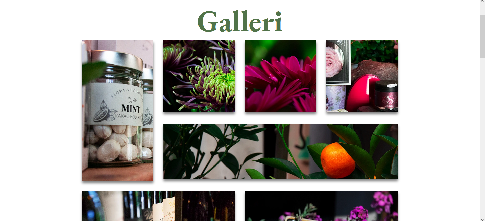
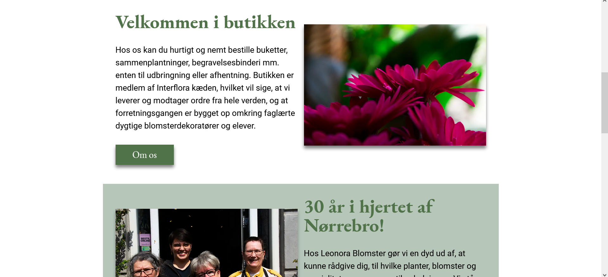

Tema 5 var kulminationen på semesteret, hvor vi kunne få alle de ting vi har lært i spil. Vi skulle som en del af temaet lave et redesign af en allerede eksisterende virksomheds hjemmeside og video content til. Under temaet skulle vi blandt andet gennem en designproces, video/foto produktion og en kodning. Under designprocessen gjord vi blandt andet brug af wireframes, som senere blev til hi-fi prototypes. Her kunne man også have haft en mere grundig designproces og gjort brug af crazy-8 metoden, så man fik lidt forskellige ideer. Vi lavede også forskellige tests af nuværende og nye hjemmeside. Her snakker vi BERT-test, 5 sekunders test og expert test. Alle samme med med til at skabe overblik over mål og resultater. For at vi alle havde det samme at kode ud fra lavede vi også layout diagrammer til hver side. Under optagelse af video havde vi lavet et grovt storyboard, som vi fulgte. Her kunne vi have haft fordel af at vi inden optagelse havde aftalt mere grundigt, hvad der skulle filmes af b-rolls og interviews. Under optagelse stod jeg for at tage billeder til den nye side. Da vi kom hjem opdagede vi, at vi havde haft problemer med lyden, så vi måtte tage interviewet om igen. Dette lærte vi noget af.

